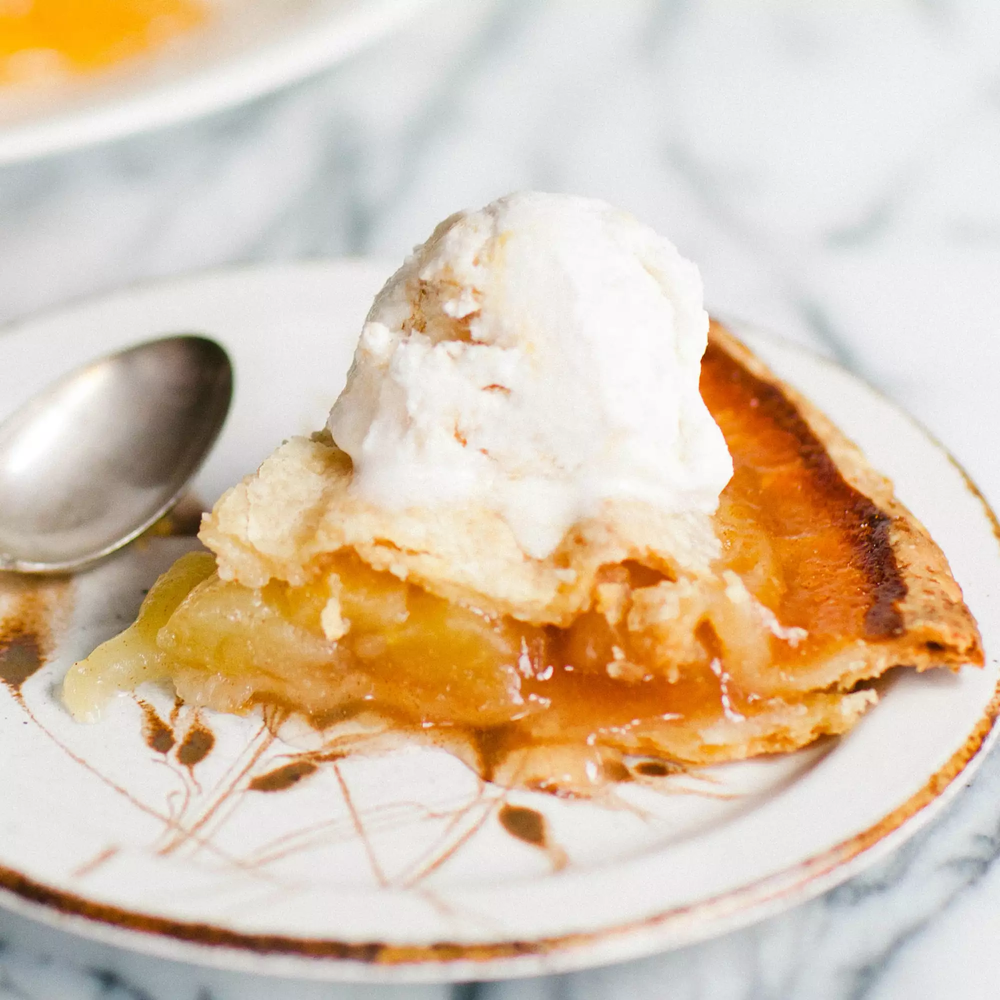

This was my grandmother's apple pie recipe. I have never seen another one quite like it. It will always be my favorite and has won me several first place prizes in local competitions. I hope it becomes one of your favorites as well! Serve hot or cold at family dinners or during the holidays, topped with whipped cream or ice cream, or alongside a slice of Cheddar cheese.